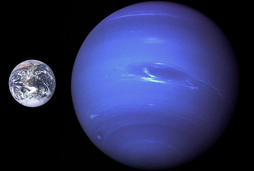

El interior de Neptuno es roca fundida con agua, metano y amoníaco líquidos. En el exterior abunda el metano, que le da su característico color azul. Neptuno es un poco más pequeño que Urano, pero más denso.
La atmósfera tiene algunas manchas que recuerdan las tempestades de Júpiter, pero, a diferencia de este, en Neptuno se forman y desaparecen con frecuencia La más grande, la Gran Mancha Oscura, tenía un tamaño similar al de la Tierra, pero en 1994 desapareció y se formó otra. Los vientos más fuertes de cualquier planeta del Sistema Solar son los de Neptuno. Muchos de ellos soplan en sentido contrario al de rotación. Cerca de la Gran Mancha Oscura se midieron vientos de 2.000 Km/h
Seguir leyendo| DATOS | NEPTUNO | TIERRA | |
|---|---|---|---|
| Tamañno | 24,622 km | 6,378 km |  |
| Distancia media al sol | 4,498,252,900 km | 149,600,000 | |
| Dia | 16,11 horas | 23,93 horas | |
| Año | 164,8 años | 1 año | |
| Temperatura | -220 °C | 15°C | |
| Gravedad | 11 m/s | 9,78 m/s2 |